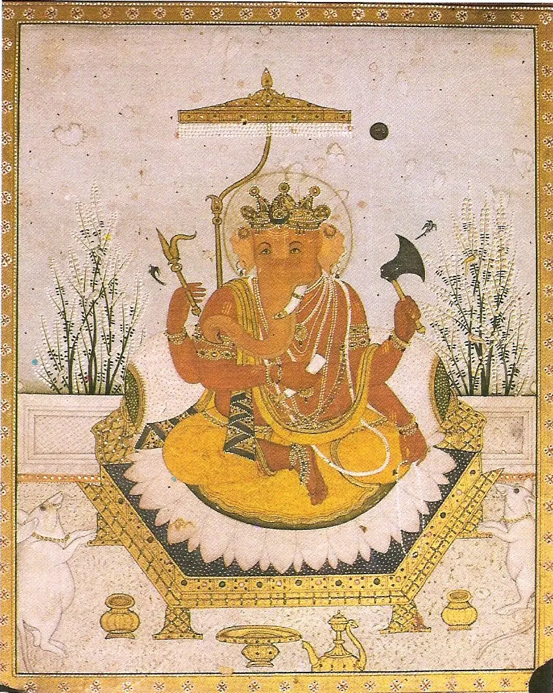

Responsibility grows from practice.
Teaching at Senses is not simply the completion of a training. It develops through study, apprenticeship, service, observation, practice, and demonstrated responsibility to community.
Heroic Yogi Apprenticeship
The common educational foundation combining practice, study, reflection, applied service, archetypal inquiry, and progressively greater teaching responsibility. Semester One follows the Gaṇeśa Path and later enters the Rāmāyaṇa as a living narrative field.
Apply for the Apprenticeship Meet the Heroic Yogi Archetypes →
Teacher Development
Students learn to translate embodied knowledge into accessible, responsive, community-rooted teaching.
YAGI Steward Pathway
Teachers and developing teachers may form an ongoing rhythm with a living site—integrating practice, teaching, observation, care, and stewardship.
Semester Two · Specialization
The 9–12 week applied pathway is being developed with mentors and field partners. Length, schedule, and learning agreements will be confirmed for each pathway before enrollment.
Leadership is cultivated, not announced.
Version 1 traced a movement from regulation and strength toward service and teaching. The current school architecture carries that wisdom forward through demonstrated responsibility.
Build practice and understanding.
Support people and place.
Reflect and preserve learning.
Care for shared work.
Guide when readiness is clear.
